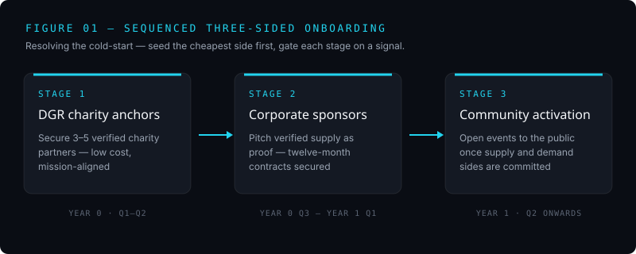

01 / The capstone
A platform with a chicken-and-egg problem
My team's capstone proposed Hillview Estate's Strategic Philanthropy Marketing Hub - a three-sided platform, endorsed by The King's Foundation, that turns corporate sustainability intent into verified social impact, aligned to UN Sustainable Development Goal 17, Partnerships for the Goals.
I reframed it as a marketing problem
The team's earlier work called this a market failure in charitable giving. My chapter argued the failure sits one level down: demand, supply, and corporate intent all already exist, but what's missing is the go-to-market mechanism that turns intent into recurring sponsorship revenue and verified impact. That reframes the Hub as a B2B2C platform, rather than a charity middleman.
Solving the cold-start
Three-sided platforms fail the same way, as every side waits for the others, and nothing accumulates. Drawing on Rochet and Tirole's work on multisided markets, I sequenced the launch instead of attempting a parallel one: seed the cheapest, most mission-aligned side first (three to five DGR charities), turn that verified supply into the pitch for corporate sponsors, then open events to the community once both sides are committed. Each stage is gated on a measurable signal before the next begins.

"Team and project success depend on establishing clear goals at the outset, rather than letting friction accumulate through ambiguity."